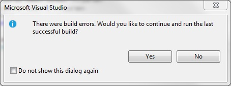
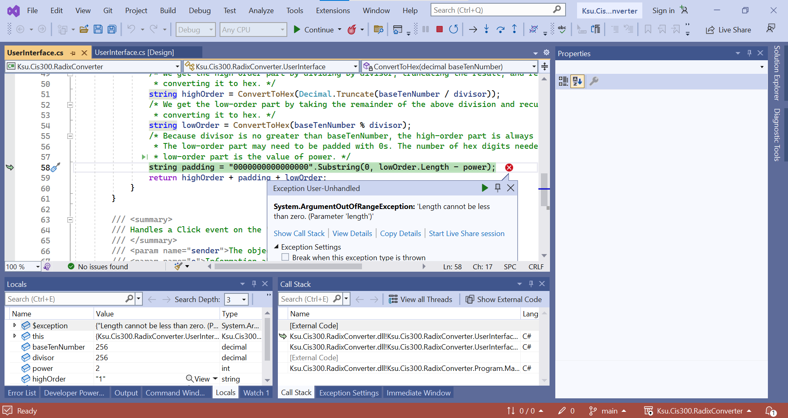
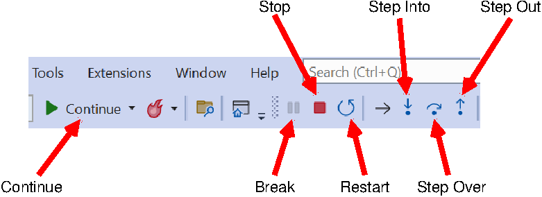
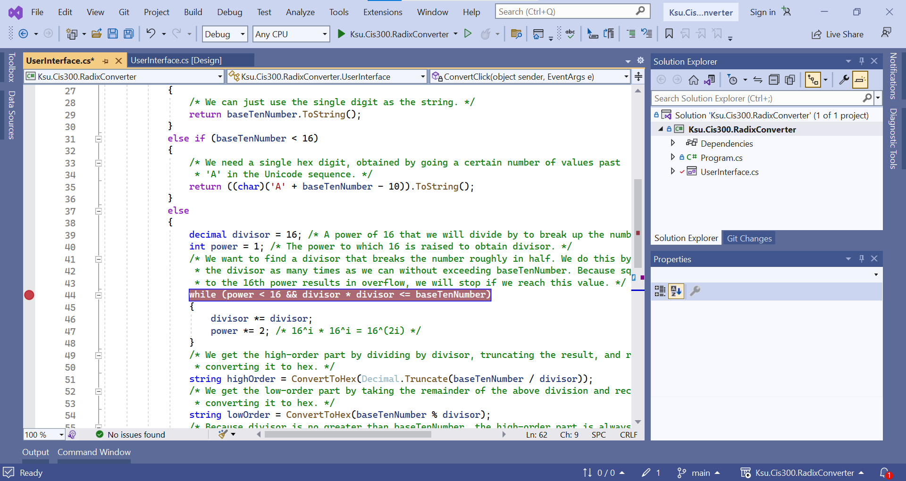
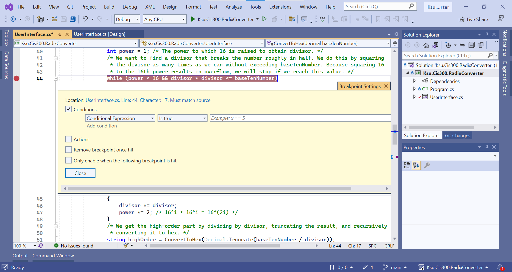

The Debugger
In previous sections, we discussed how a Windows Forms Application can be built using Visual Studio. Having built an application, we need to be able to run and test it. To do this, we use the Visual Studio Debugger. When an application is loaded into Visual Studio, we can invoke the debugger by clicking the “Start” button near the top:

A Visual Studio bug has sometimes caused this button to be missing. If this happens, you can instead click “Start Debugging” on the “Debug” menu.
When the debugger starts, it attempts to do the following things:
- Save any unsaved files.
- Compile the source code into executable code.
- Run the compiled code as an application.
If everything works correctly, the application is complete. Rarely, however, does everything work correctly the first time. Through the remainder of this section, we will discuss some of the ways the debugger can be used to find and fix errors.
One of the problems that can occur is that the compiler can fail to produce executable code because the source code contains syntax errors. When this happens, the following dialog is displayed:

Usually the best thing to do at this point is to click the “No” button. This will stop the debugger. To see a list of the syntax errors, click the error list button at the bottom of the Visual Studio window:

Double-clicking on a syntax error will highlight the error in the code window. Normally, fixing the error will cause the corresponding entry in the Error List to disappear; however, there are times when the entry won’t disappear until the debugger is started again (i.e., by clicking the “Start” button).
Once the syntax errors are removed, the debugger will be able to generate executable code and run it. However, more problems can occur at this point. One common problem is that an exception is thrown. For example, the GitHub repository created by this invitation link (see “ Git Repositories”) contains a Visual Studio solution for a program to convert decimal numbers to base-16. Don’t worry about understanding the code, although the numerous comments may help you to do that. Instead, note that an exception is thrown when we try to convert 256:

This message gives us quite a bit of information already. First, it tells us which line threw the exception - the line highlighted in green. The arrow in the left margin tells us the same thing, but more generally, when the debugger is running, it indicates the line that is currently being executed or that is ready to be executed. The popup window indicates what kind of exception was thrown: an ArgumentOutOfRangeException. It also provides the additional information that a length was less than zero when it should not have been.
Having this information, we can now use the debugger to investigate further the cause of the exception. First, in order to see the code more clearly, we might want to close the popup window (we can always get it back by clicking the red circle containing the white ‘X’). We can now examine the values of any of the variables at the time the exception was thrown by hovering the mouse over them. For example, if we hover over lowOrder, a popup appears indicating that it has a value of “0”. If we move the mouse to hover over its Length property, we can see that it has a value of 1. Hovering over power shows that it has a value of 2. Thus, we can see that the exception was thrown because we gave the Substring method a length of 1 - 2 = -1. This can be confirmed by hovering the mouse over the “-” in the expression - the popup indicates that the value of the expression is, in fact, -1.
Actually fixing the error requires a little more understanding of the code. In this case, however, the comment immediately above the line in question helps us out. It tells us that the low-order part of the hex string we are building may need to be padded with 0s - this padding is what we are constructing. Furthermore, it tells us that the number of hex digits we need is the value of power. In order to get this many digits, we need to subtract the number of hex digits we already have in lowOrder from power; i.e., we need to reverse the order of the subtraction. However, we can’t make the correction until we stop the debugger.
To stop the debugger, notice the buttons that are available at the top of the Visual Studio window while the debugger is running:

As you might guess, the “Stop” button stops the debugger. In what follows, we will discuss each of the other buttons indicated in the above figure, as well as other features of the debugger.
When debugging code, it is often useful to be able to pause execution at a particular place in order to be able to examine the values of variables as we did above. To accomplish this, we can set a breakpoint by clicking in the left margin of the code window at the line where we would like execution to pause. This places a large red dot in the margin where we clicked and colors the line red:

Whenever execution reaches a breakpoint, execution stops prior to executing that line. At this point, we can examine the values of variables as we described above. When we are ready to continue execution of the program, we click the “Continue” button. A breakpoint can be deleted by clicking on the red dot, or all breakpoints may be deleted by selecting “Delete All Breakpoints” from the “Debug” menu.
Sometimes we only want the execution to pause at a breakpoint when a certain condition is met. Such a situation might occur if we have a bug that only surfaces after the code containing it has already executed many times. Rather than letting the program stop and clicking “Continue” until we reach the point we are interested in, we can instead specify a condition on the breakpoint. To do this, right-click on the breakpoint in the left margin, and select “Conditions…” from the resulting popup menu. This causes a large box to be inserted into to the code below this line:

In this box, we can type an expression using variables visible at that program location. We can also choose whether we want execution to pause when that expression is true or whenever that expression has changed.
For example, we could add to the above breakpoint the condition:
power == 8
Then when we run the debugger, execution will only pause at this breakpoint when power reaches a value of 8. Note that this line is executed at the top of each iteration of the loop; hence, the breakpoint condition is checked on each iteration.
While hovering the mouse over variable names is a useful way to discover their current values, there are other mechanisms for doing this as well. For example, while the debugger is paused, you can go to the “Debug” menu and select “Windows -> Locals”. This will open a window displaying all of the local variables for the current method, property, or constructor, together with their current values. If the debugger is paused within a constructor or a non-static method or property, this window also contains this, which refers to the object that contains the constructor, method, or property. From this, you can access the non-static fields of this object.
Another mechanism for examining values of variables is through the “Immediate” window, which can also be accessed from the “Debug” menu via its “Windows” sub-menu. Within the Immediate window, you may type an expression involving the variables that are currently visible, press “Enter”, and it will display the value of that expression. This can be particularly useful when you have a large data structure, and you need to know a particular element in that structure. For example, suppose array is a large int[ ], and suppose i is an int. Using the “Locals” window, it might be rather tedious to find the value of array[i]. Using the Immediate window, however, you can just type in
array[i]
and it will display its value.
When debugging, it is often useful to be able to step through the
execution of a piece of code so that you can see exactly what it is
doing. Three buttons are available for this purpose: “Step Into”,
“Step Over”, and “Step Out”. Suppose we were to run the code in the
GitHub repository provided above with the (unconditional) breakpoint shown in the above picture, and suppose we were to enter the value, 12345. Execution will then pause at this breakpoint with divisor equal to 16 and power equal to 1. Clicking either the “Step Into” button or the “Step Over” button will cause the debugger to evaluate the loop condition and, because its value is true, advance to the “{” on the next line. We may continue to walk through the execution a step at a time using either of these buttons - as long as we are in this loop, they will have the same effect. If the Locals window is open, whenever a variable changes value, this value will be shown in red.
After one iteration, the loop will terminate, and execution will reach the line where highOrder is defined. At this point, the functionality of the “Step Into” and “Step Over” buttons becomes different because this line contains a method call. The “Step Over” button will cause execution to run normally through the method call, and pause again as soon as the method call returns (however, because this is a recursive call, if the breakpoint is still set, execution will pause when it reaches the breakpoint within the recursive call). Thus, we can see the net effect of this method call without having to walk through it a step at a time. On the other hand, we might want to step through it in order to see what it is doing. We can do this using the “Step Into” button. If at some point we want to finish executing the method we are in, but pause after it returns, we can click the “Step Out” button.
When stepping through code, a “Watch” window is often a convenient way to keep track of the value of one or more specific variables and/or expressions. You can open a Watch window from the “Debug” menu under “Windows -> Watch” — the four choices here are four different Watch windows that you may use (perhaps for debugging different parts of your program). A Watch window combines some of the advantages of the Locals window and the Immediate window. If you type in a value or expression, it will appear in the “Name” column, and if it can be evaluated in the current context, its value will be displayed in the “Value” column. Furthermore the value will be updated as the debugger executes code. You may list several values or expressions in the same Watch window, and their values will all be tracked. To delete an entry from a Watch window, right-click on it and select “Delete Watch”.